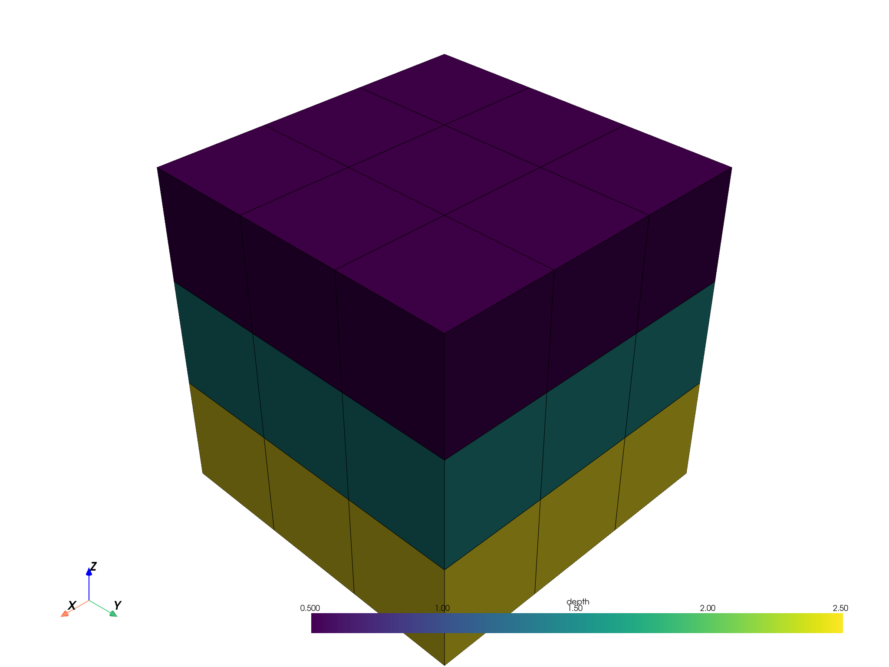

Note
Go to the end to download the full example code.
Block Models#
Block models represent 3D data, typically via a 3D array. 3D arrays can be flattened into a 2D tabular representation that can be stored in a parquet file.
import tempfile
import pandas as pd
from pathlib import Path
from parq_blockmodel import ParquetBlockModel
Create a Parquet Block Model#
We leverage the create_demo_block_model class method to create a Parquet Block Model.
temp_dir = Path(tempfile.gettempdir()) / "block_model_example"
temp_dir.mkdir(parents=True, exist_ok=True)
pbm: ParquetBlockModel = ParquetBlockModel.create_demo_block_model(
filename=temp_dir / "demo_block_model.parquet")
pbm
ParquetBlockModel(name=demo_block_model, path=/tmp/block_model_example/demo_block_model.pbm)
Create Report#
We’ll create a report for the Parquet Block Model.
pbm.create_report(open_in_browser=True, show_progress=True)
Profiling columns: 0%| | 0/11 [00:00<?, ?it/s]
Profiling columns: 91%|█████████ | 10/11 [00:00<00:00, 22.73it/s]
Profiling columns: 100%|██████████| 11/11 [00:00<00:00, 15.59it/s]
0%| | 0/10 [00:00<?, ?it/s]
100%|██████████| 10/10 [00:00<00:00, 689.54it/s]
PosixPath('/tmp/block_model_example/demo_block_model.html')
Visualise the Model#
p = pbm.plot(scalar='depth', threshold=False, enable_picking=True)
p.show()

Total running time of the script: (0 minutes 5.133 seconds)